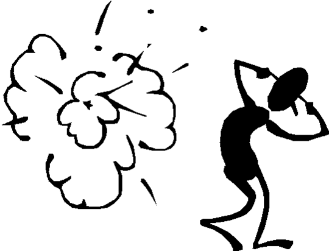

|

|
- Napíš program s vlo�enım textom "Zaèíname" a s tlaèítkami
"Dobré ráno", "Dobrı deò", "Dobrı veèer" a "Exit", kde prvé tri menia nápis a posledné ukonèuje program.
- Napíš program s vlo�enım textom "Hello word" v strede okna a tlaèítkami, ktoré ho vedia
presúva� vnútri formulára.Stiahni
Pozn.
Ve¾kos� okna i ïalších objektov je vo vlastnostiach "height" (vèítane titulnej lišty) a "width"
Poloha objektu vo formulári je urèená vo vlastnostiach "top" a "left".
- Napíš program s vlo�enım textom "Hello word" v strede okna a tlaèidlom vpravo dole.
Pri zmene ve¾kosti okna (vlastnos� Resize) zabezpeète, aby text bol stále vycentrovanı
a tlaèidlo "Exit" bolo stále viditelné vpravo dole.Stiahni
|